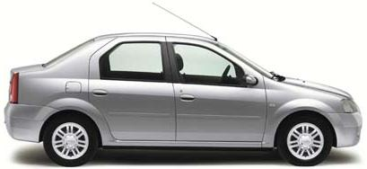

| Busca responder a una necesidad de
la industria
aseguradora en el ramo de
vehículos.
El producto permite a los clientes siniestrados
la posibilidad de
disponer de un vehículo sustituto durante el tiempo que el
vehículo asegurado permanezca en el taller.*
Actualmente algunas aseguradoras ofrecen este
producto de manera
voluntaria y con un alto costo para el usuario.
*
7 días de cobertura
|
 |
|
8
principales
ciudades: Bogotá, B/quilla, Cali,
Medellín, B/manga y
Eje Cafetero (Pereira, Armenia y Manizales)
Tener
un producto innovador que diferencie a la
compañía de seguros en la industria.
Posibilidad de generar publicidad y
reconocimiento a través de los vehículos que
circulen
por las calles.
Una flota
vehículos a su disposición.
|
|